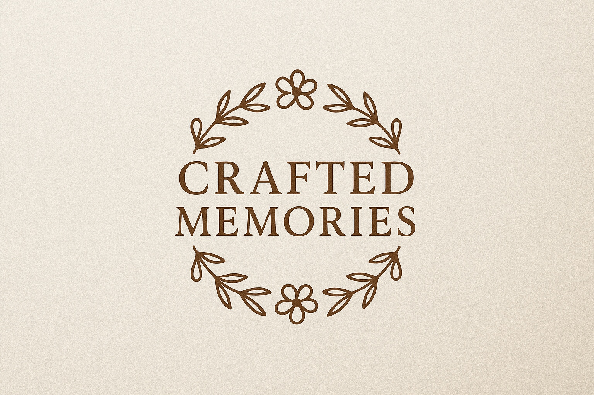

CRAFTED MEMORIES
Het fotoboek
Ontdek hier mijn collectie handgemaakte vazen. Ieder exemplaar is uniek en met aandacht gemaakt.

CRAFTED MEMORIES
Ontdek hier mijn collectie handgemaakte vazen. Ieder exemplaar is uniek en met aandacht gemaakt.